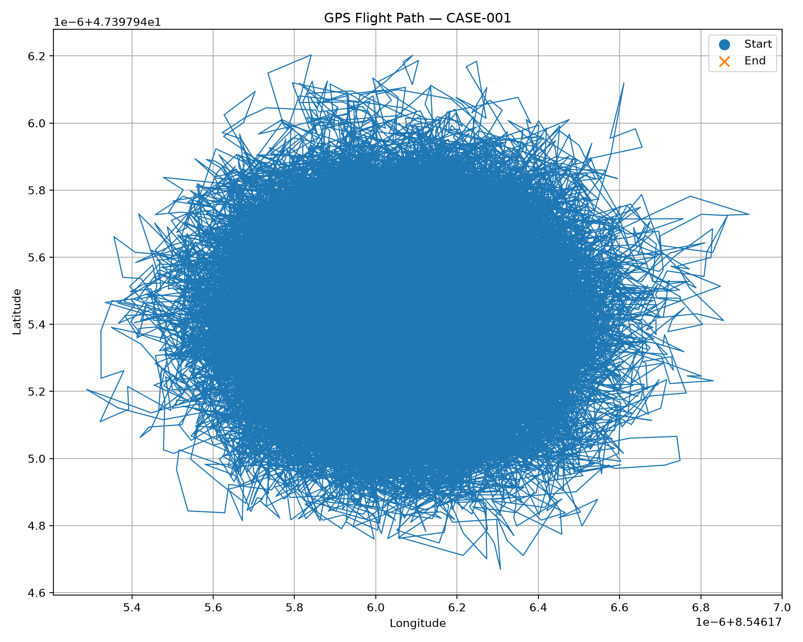
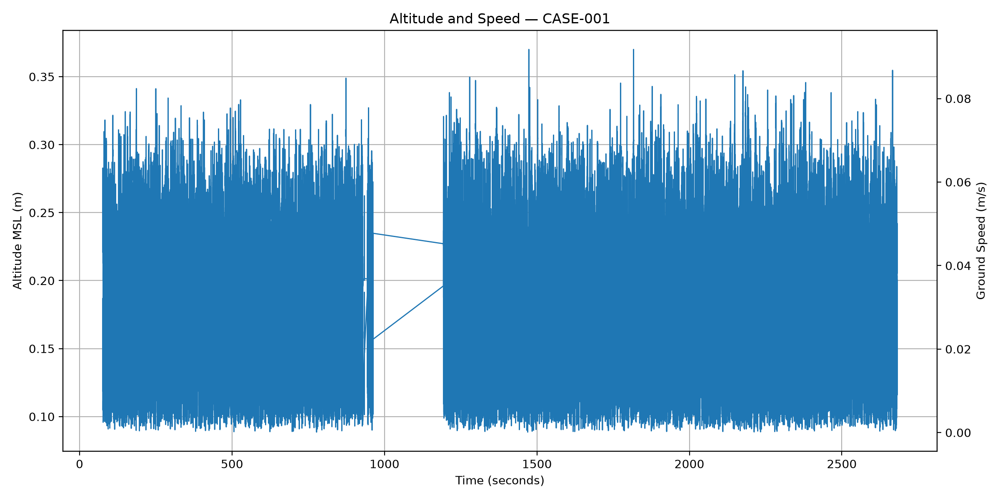
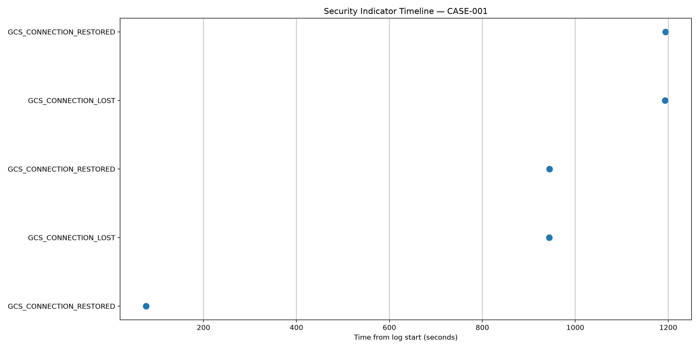

Case: CASE-001
Evidence: EVD-20260919-175126
Source: 17_02_27.ulg
Generated: 2026-09-27 23:34:07
| Case ID | CASE-001 |
|---|---|
| Evidence ID | EVD-20260919-175126 |
| Source | 17_02_27.ulg |
| Report generated | 2026-09-27 23:34:07 |
| case_id | CASE-001 |
|---|---|
| evidence_id | EVD-20260919-175126 |
| event_id | 1 |
|---|---|
| event | EVIDENCE_ACQUIRED |
| timestamp_utc | 2026-09-19T17:51:26.759714+00:00 |
| operator | drone_forensics |
| evidence_id | EVD-20260919-175126 |
| description | Digital evidence acquired. |
| event_id | 2 |
|---|---|
| event | HASH_CALCULATED |
| timestamp_utc | 2026-09-19T17:51:26.759714+00:00 |
| operator | drone_forensics |
| evidence_id | EVD-20260919-175126 |
| algorithm | SHA-256 |
| hash | ec47d7c7d6ef9843364714aed421b6e9715c59d529c43761aac274947902d875 |
| event_id | 3 |
|---|---|
| event | FORENSIC_COPY_CREATED |
| timestamp_utc | 2026-09-19T17:51:26.759714+00:00 |
| operator | drone_forensics |
| evidence_id | EVD-20260919-175126 |
| copy | /home/srujan-mishrikotkar/drone_forensics/repository/cases/CASE-001/EVD-20260919-175126/evidence/17_02_27.ulg |
| event_id | 4 |
|---|---|
| event | INTEGRITY_VERIFIED |
| timestamp_utc | 2026-09-19T17:51:26.759714+00:00 |
| operator | drone_forensics |
| evidence_id | EVD-20260919-175126 |
| original_hash | ec47d7c7d6ef9843364714aed421b6e9715c59d529c43761aac274947902d875 |
| copy_hash | ec47d7c7d6ef9843364714aed421b6e9715c59d529c43761aac274947902d875 |
| verified | true |
| GPS samples | 70755 |
|---|---|
| Vehicle commands | N/A |
| Command ACKs | 21 |
| State events | 54 |
| Timeline events | 44 |
| case_id | CASE-001 | ||||||||||||||||||||||||||||||||
|---|---|---|---|---|---|---|---|---|---|---|---|---|---|---|---|---|---|---|---|---|---|---|---|---|---|---|---|---|---|---|---|---|---|
| evidence_id | EVD-20260919-175126 | ||||||||||||||||||||||||||||||||
| source | repository/cases/CASE-001/EVD-20260919-175126/analysis/gps_data.json | ||||||||||||||||||||||||||||||||
| sample_count | 70755 | ||||||||||||||||||||||||||||||||
| gps_state_distribution |
| ||||||||||||||||||||||||||||||||
| state_transitions |
| ||||||||||||||||||||||||||||||||
| gps_quality |
| ||||||||||||||||||||||||||||||||
| position_analysis |
| ||||||||||||||||||||||||||||||||
| observations |
| ||||||||||||||||||||||||||||||||
| forensic_note | Navigation state observations are derived from recorded PX4 telemetry. They should not by themselves be interpreted as proof or exclusion of a cyberattack. |



| case_id | CASE-001 | ||||||||||||||||||||||||||||||||||||||||||||||||||||||||||||||||||||||||||||||||||||||||||||||||||||||||||||||||||||||||||||||||||||||||||||||||||||||||||||||||||||||||||||||||||||||||||||||||||||||||||||||||||||||||||||||||||||||||||||||||||||||||||||||||||||||||||||||||||||||||||||||||||||||||||||||||||||||||||||||||||||||||||||||||||||||||||||||||||||||||||||||||||||||||||||||||||||||||||||||||||||||||||||||||||||||||||||||||||||||||||||||||||||||||||||||||||||||||||||||||||||||||||||||||||||||||||||||||||||||||||||||||||||||||||||
|---|---|---|---|---|---|---|---|---|---|---|---|---|---|---|---|---|---|---|---|---|---|---|---|---|---|---|---|---|---|---|---|---|---|---|---|---|---|---|---|---|---|---|---|---|---|---|---|---|---|---|---|---|---|---|---|---|---|---|---|---|---|---|---|---|---|---|---|---|---|---|---|---|---|---|---|---|---|---|---|---|---|---|---|---|---|---|---|---|---|---|---|---|---|---|---|---|---|---|---|---|---|---|---|---|---|---|---|---|---|---|---|---|---|---|---|---|---|---|---|---|---|---|---|---|---|---|---|---|---|---|---|---|---|---|---|---|---|---|---|---|---|---|---|---|---|---|---|---|---|---|---|---|---|---|---|---|---|---|---|---|---|---|---|---|---|---|---|---|---|---|---|---|---|---|---|---|---|---|---|---|---|---|---|---|---|---|---|---|---|---|---|---|---|---|---|---|---|---|---|---|---|---|---|---|---|---|---|---|---|---|---|---|---|---|---|---|---|---|---|---|---|---|---|---|---|---|---|---|---|---|---|---|---|---|---|---|---|---|---|---|---|---|---|---|---|---|---|---|---|---|---|---|---|---|---|---|---|---|---|---|---|---|---|---|---|---|---|---|---|---|---|---|---|---|---|---|---|---|---|---|---|---|---|---|---|---|---|---|---|---|---|---|---|---|---|---|---|---|---|---|---|---|---|---|---|---|---|---|---|---|---|---|---|---|---|---|---|---|---|---|---|---|---|---|---|---|---|---|---|---|---|---|---|---|---|---|---|---|---|---|---|---|---|---|---|---|---|---|---|---|---|---|---|---|---|---|---|---|---|---|---|---|---|---|---|---|---|---|---|---|---|---|---|---|---|---|---|---|---|---|---|---|---|---|---|---|---|---|---|---|---|---|---|---|---|---|---|---|---|---|---|---|---|---|---|---|---|---|---|---|---|---|---|---|---|---|---|---|---|---|---|---|---|---|---|---|---|---|---|---|---|---|---|---|---|---|---|---|---|---|---|---|---|---|---|---|---|---|---|---|---|---|---|---|---|---|---|---|---|---|---|---|---|---|---|---|---|---|---|---|---|---|---|---|---|---|---|---|---|---|---|---|---|---|---|---|---|---|---|---|---|---|---|---|---|---|---|---|---|---|---|---|---|---|---|---|---|---|---|---|---|---|---|---|---|---|---|---|---|---|---|---|---|---|---|---|---|---|---|---|---|---|---|---|---|---|---|---|---|---|---|
| evidence_id | EVD-20260919-175126 | ||||||||||||||||||||||||||||||||||||||||||||||||||||||||||||||||||||||||||||||||||||||||||||||||||||||||||||||||||||||||||||||||||||||||||||||||||||||||||||||||||||||||||||||||||||||||||||||||||||||||||||||||||||||||||||||||||||||||||||||||||||||||||||||||||||||||||||||||||||||||||||||||||||||||||||||||||||||||||||||||||||||||||||||||||||||||||||||||||||||||||||||||||||||||||||||||||||||||||||||||||||||||||||||||||||||||||||||||||||||||||||||||||||||||||||||||||||||||||||||||||||||||||||||||||||||||||||||||||||||||||||||||||||||||||||
| source | repository/cases/CASE-001/EVD-20260919-175126/evidence/17_02_27.ulg | ||||||||||||||||||||||||||||||||||||||||||||||||||||||||||||||||||||||||||||||||||||||||||||||||||||||||||||||||||||||||||||||||||||||||||||||||||||||||||||||||||||||||||||||||||||||||||||||||||||||||||||||||||||||||||||||||||||||||||||||||||||||||||||||||||||||||||||||||||||||||||||||||||||||||||||||||||||||||||||||||||||||||||||||||||||||||||||||||||||||||||||||||||||||||||||||||||||||||||||||||||||||||||||||||||||||||||||||||||||||||||||||||||||||||||||||||||||||||||||||||||||||||||||||||||||||||||||||||||||||||||||||||||||||||||||
| vehicle_command_count | 18 | ||||||||||||||||||||||||||||||||||||||||||||||||||||||||||||||||||||||||||||||||||||||||||||||||||||||||||||||||||||||||||||||||||||||||||||||||||||||||||||||||||||||||||||||||||||||||||||||||||||||||||||||||||||||||||||||||||||||||||||||||||||||||||||||||||||||||||||||||||||||||||||||||||||||||||||||||||||||||||||||||||||||||||||||||||||||||||||||||||||||||||||||||||||||||||||||||||||||||||||||||||||||||||||||||||||||||||||||||||||||||||||||||||||||||||||||||||||||||||||||||||||||||||||||||||||||||||||||||||||||||||||||||||||||||||||
| command_ack_count | 21 | ||||||||||||||||||||||||||||||||||||||||||||||||||||||||||||||||||||||||||||||||||||||||||||||||||||||||||||||||||||||||||||||||||||||||||||||||||||||||||||||||||||||||||||||||||||||||||||||||||||||||||||||||||||||||||||||||||||||||||||||||||||||||||||||||||||||||||||||||||||||||||||||||||||||||||||||||||||||||||||||||||||||||||||||||||||||||||||||||||||||||||||||||||||||||||||||||||||||||||||||||||||||||||||||||||||||||||||||||||||||||||||||||||||||||||||||||||||||||||||||||||||||||||||||||||||||||||||||||||||||||||||||||||||||||||||
| vehicle_commands |
| ||||||||||||||||||||||||||||||||||||||||||||||||||||||||||||||||||||||||||||||||||||||||||||||||||||||||||||||||||||||||||||||||||||||||||||||||||||||||||||||||||||||||||||||||||||||||||||||||||||||||||||||||||||||||||||||||||||||||||||||||||||||||||||||||||||||||||||||||||||||||||||||||||||||||||||||||||||||||||||||||||||||||||||||||||||||||||||||||||||||||||||||||||||||||||||||||||||||||||||||||||||||||||||||||||||||||||||||||||||||||||||||||||||||||||||||||||||||||||||||||||||||||||||||||||||||||||||||||||||||||||||||||||||||||||||
| command_acknowledgements |
| ||||||||||||||||||||||||||||||||||||||||||||||||||||||||||||||||||||||||||||||||||||||||||||||||||||||||||||||||||||||||||||||||||||||||||||||||||||||||||||||||||||||||||||||||||||||||||||||||||||||||||||||||||||||||||||||||||||||||||||||||||||||||||||||||||||||||||||||||||||||||||||||||||||||||||||||||||||||||||||||||||||||||||||||||||||||||||||||||||||||||||||||||||||||||||||||||||||||||||||||||||||||||||||||||||||||||||||||||||||||||||||||||||||||||||||||||||||||||||||||||||||||||||||||||||||||||||||||||||||||||||||||||||||||||||||
| forensic_note | Command IDs and parameters are preserved as recorded in the PX4 ULog. Semantic interpretation must be based on the applicable PX4 command definitions and should not replace the original recorded values. |
| case_id | CASE-001 | ||||||||||||||||||||||||||||||||||||||||||||||||||||||||||||||||||||||||||||||||||||||||||||||||||||||||||||||||||||||||||||||||||||||||||||||||||||||||||||||||||||||||||||||||||||||||||||||||||||||||||||||||||||||||||||||||||||||||||||||||||||||||||||||||||||||||||||||||||||||||||||||||||||||||||||||||||||||||||||||||||||||||||||||||||||||||||||||||||||||||||||||||||||||||||||||||||||||||||||||||||||||||||||||||||||||||||||||||||||||||||||||||||||||||
|---|---|---|---|---|---|---|---|---|---|---|---|---|---|---|---|---|---|---|---|---|---|---|---|---|---|---|---|---|---|---|---|---|---|---|---|---|---|---|---|---|---|---|---|---|---|---|---|---|---|---|---|---|---|---|---|---|---|---|---|---|---|---|---|---|---|---|---|---|---|---|---|---|---|---|---|---|---|---|---|---|---|---|---|---|---|---|---|---|---|---|---|---|---|---|---|---|---|---|---|---|---|---|---|---|---|---|---|---|---|---|---|---|---|---|---|---|---|---|---|---|---|---|---|---|---|---|---|---|---|---|---|---|---|---|---|---|---|---|---|---|---|---|---|---|---|---|---|---|---|---|---|---|---|---|---|---|---|---|---|---|---|---|---|---|---|---|---|---|---|---|---|---|---|---|---|---|---|---|---|---|---|---|---|---|---|---|---|---|---|---|---|---|---|---|---|---|---|---|---|---|---|---|---|---|---|---|---|---|---|---|---|---|---|---|---|---|---|---|---|---|---|---|---|---|---|---|---|---|---|---|---|---|---|---|---|---|---|---|---|---|---|---|---|---|---|---|---|---|---|---|---|---|---|---|---|---|---|---|---|---|---|---|---|---|---|---|---|---|---|---|---|---|---|---|---|---|---|---|---|---|---|---|---|---|---|---|---|---|---|---|---|---|---|---|---|---|---|---|---|---|---|---|---|---|---|---|---|---|---|---|---|---|---|---|---|---|---|---|---|---|---|---|---|---|---|---|---|---|---|---|---|---|---|---|---|---|---|---|---|---|---|---|---|---|---|---|---|---|---|---|---|---|---|---|---|---|---|---|---|---|---|---|---|---|---|---|---|---|---|---|---|---|---|---|---|---|---|---|---|---|---|---|---|---|---|---|---|---|---|---|---|---|---|---|---|---|---|---|---|---|---|---|---|---|---|---|---|---|---|---|---|---|---|---|---|---|---|---|---|---|---|---|---|---|---|---|---|---|---|---|---|---|---|---|---|---|---|---|---|---|---|---|---|---|---|---|---|---|---|---|---|---|---|---|---|---|---|
| evidence_id | EVD-20260919-175126 | ||||||||||||||||||||||||||||||||||||||||||||||||||||||||||||||||||||||||||||||||||||||||||||||||||||||||||||||||||||||||||||||||||||||||||||||||||||||||||||||||||||||||||||||||||||||||||||||||||||||||||||||||||||||||||||||||||||||||||||||||||||||||||||||||||||||||||||||||||||||||||||||||||||||||||||||||||||||||||||||||||||||||||||||||||||||||||||||||||||||||||||||||||||||||||||||||||||||||||||||||||||||||||||||||||||||||||||||||||||||||||||||||||||||||
| source | repository/cases/CASE-001/EVD-20260919-175126/evidence/17_02_27.ulg | ||||||||||||||||||||||||||||||||||||||||||||||||||||||||||||||||||||||||||||||||||||||||||||||||||||||||||||||||||||||||||||||||||||||||||||||||||||||||||||||||||||||||||||||||||||||||||||||||||||||||||||||||||||||||||||||||||||||||||||||||||||||||||||||||||||||||||||||||||||||||||||||||||||||||||||||||||||||||||||||||||||||||||||||||||||||||||||||||||||||||||||||||||||||||||||||||||||||||||||||||||||||||||||||||||||||||||||||||||||||||||||||||||||||||
| command_count | 18 | ||||||||||||||||||||||||||||||||||||||||||||||||||||||||||||||||||||||||||||||||||||||||||||||||||||||||||||||||||||||||||||||||||||||||||||||||||||||||||||||||||||||||||||||||||||||||||||||||||||||||||||||||||||||||||||||||||||||||||||||||||||||||||||||||||||||||||||||||||||||||||||||||||||||||||||||||||||||||||||||||||||||||||||||||||||||||||||||||||||||||||||||||||||||||||||||||||||||||||||||||||||||||||||||||||||||||||||||||||||||||||||||||||||||||
| ack_count | 21 | ||||||||||||||||||||||||||||||||||||||||||||||||||||||||||||||||||||||||||||||||||||||||||||||||||||||||||||||||||||||||||||||||||||||||||||||||||||||||||||||||||||||||||||||||||||||||||||||||||||||||||||||||||||||||||||||||||||||||||||||||||||||||||||||||||||||||||||||||||||||||||||||||||||||||||||||||||||||||||||||||||||||||||||||||||||||||||||||||||||||||||||||||||||||||||||||||||||||||||||||||||||||||||||||||||||||||||||||||||||||||||||||||||||||||
| command_id_summary |
| ||||||||||||||||||||||||||||||||||||||||||||||||||||||||||||||||||||||||||||||||||||||||||||||||||||||||||||||||||||||||||||||||||||||||||||||||||||||||||||||||||||||||||||||||||||||||||||||||||||||||||||||||||||||||||||||||||||||||||||||||||||||||||||||||||||||||||||||||||||||||||||||||||||||||||||||||||||||||||||||||||||||||||||||||||||||||||||||||||||||||||||||||||||||||||||||||||||||||||||||||||||||||||||||||||||||||||||||||||||||||||||||||||||||||
| ack_id_summary |
| ||||||||||||||||||||||||||||||||||||||||||||||||||||||||||||||||||||||||||||||||||||||||||||||||||||||||||||||||||||||||||||||||||||||||||||||||||||||||||||||||||||||||||||||||||||||||||||||||||||||||||||||||||||||||||||||||||||||||||||||||||||||||||||||||||||||||||||||||||||||||||||||||||||||||||||||||||||||||||||||||||||||||||||||||||||||||||||||||||||||||||||||||||||||||||||||||||||||||||||||||||||||||||||||||||||||||||||||||||||||||||||||||||||||||
| matched_same_command_id |
| ||||||||||||||||||||||||||||||||||||||||||||||||||||||||||||||||||||||||||||||||||||||||||||||||||||||||||||||||||||||||||||||||||||||||||||||||||||||||||||||||||||||||||||||||||||||||||||||||||||||||||||||||||||||||||||||||||||||||||||||||||||||||||||||||||||||||||||||||||||||||||||||||||||||||||||||||||||||||||||||||||||||||||||||||||||||||||||||||||||||||||||||||||||||||||||||||||||||||||||||||||||||||||||||||||||||||||||||||||||||||||||||||||||||||
| unmatched_commands |
| ||||||||||||||||||||||||||||||||||||||||||||||||||||||||||||||||||||||||||||||||||||||||||||||||||||||||||||||||||||||||||||||||||||||||||||||||||||||||||||||||||||||||||||||||||||||||||||||||||||||||||||||||||||||||||||||||||||||||||||||||||||||||||||||||||||||||||||||||||||||||||||||||||||||||||||||||||||||||||||||||||||||||||||||||||||||||||||||||||||||||||||||||||||||||||||||||||||||||||||||||||||||||||||||||||||||||||||||||||||||||||||||||||||||||
| unmatched_acks |
| ||||||||||||||||||||||||||||||||||||||||||||||||||||||||||||||||||||||||||||||||||||||||||||||||||||||||||||||||||||||||||||||||||||||||||||||||||||||||||||||||||||||||||||||||||||||||||||||||||||||||||||||||||||||||||||||||||||||||||||||||||||||||||||||||||||||||||||||||||||||||||||||||||||||||||||||||||||||||||||||||||||||||||||||||||||||||||||||||||||||||||||||||||||||||||||||||||||||||||||||||||||||||||||||||||||||||||||||||||||||||||||||||||||||||
| observations |
|
| timestamp_us | 75908000 |
|---|---|
| timestamp_seconds | 75.908 |
| arming_state | 1 |
| nav_state | 4 |
| failsafe | 0 |
| gcs_connection_lost | 1 |
| safety_off | 1 |
| power_input_valid | 1 |
| pre_flight_checks_pass | 0 |
| timestamp_us | 75956000 |
|---|---|
| timestamp_seconds | 75.956 |
| landed | 1 |
| ground_contact | 1 |
| maybe_landed | 1 |
| in_ground_effect | 1 |
| in_descend | 1 |
| has_low_throttle | 1 |
| at_rest | 1 |
| Time (s) | Event | Previous | New |
|---|---|---|---|
| 76.632 | GCS_CONNECTION_STATE_CHANGE | 1 | 0 |
| 77.128 | DESCEND_STATE_CHANGE | 1 | 0 |
| 77.144 | DESCEND_STATE_CHANGE | 0 | 1 |
| 78.144 | PREFLIGHT_CHECK_STATE_CHANGE | 0 | 1 |
| 100.424 | PREFLIGHT_CHECK_STATE_CHANGE | 1 | 0 |
| 102.8 | PREFLIGHT_CHECK_STATE_CHANGE | 0 | 1 |
| 103.628 | PREFLIGHT_CHECK_STATE_CHANGE | 1 | 0 |
| 107.396 | PREFLIGHT_CHECK_STATE_CHANGE | 0 | 1 |
| 108.804 | PREFLIGHT_CHECK_STATE_CHANGE | 1 | 0 |
| 111.396 | PREFLIGHT_CHECK_STATE_CHANGE | 0 | 1 |
| 114.632 | PREFLIGHT_CHECK_STATE_CHANGE | 1 | 0 |
| 128.688 | PREFLIGHT_CHECK_STATE_CHANGE | 0 | 1 |
| 270.892 | PREFLIGHT_CHECK_STATE_CHANGE | 1 | 0 |
| 273.196 | PREFLIGHT_CHECK_STATE_CHANGE | 0 | 1 |
| 326.968 | PREFLIGHT_CHECK_STATE_CHANGE | 1 | 0 |
| 328.932 | PREFLIGHT_CHECK_STATE_CHANGE | 0 | 1 |
| 926.544 | PREFLIGHT_CHECK_STATE_CHANGE | 1 | 0 |
| 933.924 | DESCEND_STATE_CHANGE | 1 | 0 |
| 933.94 | DESCEND_STATE_CHANGE | 0 | 1 |
| 934.3 | DESCEND_STATE_CHANGE | 1 | 0 |
| 943.716 | GCS_CONNECTION_STATE_CHANGE | 0 | 1 |
| 943.72 | DESCEND_STATE_CHANGE | 0 | 1 |
| 944.22 | GCS_CONNECTION_STATE_CHANGE | 1 | 0 |
| 944.76 | PREFLIGHT_CHECK_STATE_CHANGE | 0 | 1 |
| 959.64 | PREFLIGHT_CHECK_STATE_CHANGE | 1 | 0 |
| 1193.196 | GCS_CONNECTION_STATE_CHANGE | 0 | 1 |
| 1193.2 | DESCEND_STATE_CHANGE | 1 | 0 |
| 1193.212 | DESCEND_STATE_CHANGE | 0 | 1 |
| 1193.484 | DESCEND_STATE_CHANGE | 1 | 0 |
| 1193.508 | DESCEND_STATE_CHANGE | 0 | 1 |
| 1194.172 | GCS_CONNECTION_STATE_CHANGE | 1 | 0 |
| 1194.496 | PREFLIGHT_CHECK_STATE_CHANGE | 0 | 1 |
| 1655.556 | PREFLIGHT_CHECK_STATE_CHANGE | 1 | 0 |
| 1663.16 | PREFLIGHT_CHECK_STATE_CHANGE | 0 | 1 |
| 1663.26 | PREFLIGHT_CHECK_STATE_CHANGE | 1 | 0 |
| 1687.2 | PREFLIGHT_CHECK_STATE_CHANGE | 0 | 1 |
| 1689.256 | PREFLIGHT_CHECK_STATE_CHANGE | 1 | 0 |
| 1697.604 | PREFLIGHT_CHECK_STATE_CHANGE | 0 | 1 |
| 1702.156 | PREFLIGHT_CHECK_STATE_CHANGE | 1 | 0 |
| 1711.372 | PREFLIGHT_CHECK_STATE_CHANGE | 0 | 1 |
| 1774.548 | PREFLIGHT_CHECK_STATE_CHANGE | 1 | 0 |
| 1776.336 | PREFLIGHT_CHECK_STATE_CHANGE | 0 | 1 |
| 1776.956 | PREFLIGHT_CHECK_STATE_CHANGE | 1 | 0 |
| 1779.356 | PREFLIGHT_CHECK_STATE_CHANGE | 0 | 1 |
| 1793.168 | PREFLIGHT_CHECK_STATE_CHANGE | 1 | 0 |
| 1799.612 | PREFLIGHT_CHECK_STATE_CHANGE | 0 | 1 |
| 1992.576 | PREFLIGHT_CHECK_STATE_CHANGE | 1 | 0 |
| 1997.7 | PREFLIGHT_CHECK_STATE_CHANGE | 0 | 1 |
| 2139.708 | PREFLIGHT_CHECK_STATE_CHANGE | 1 | 0 |
| 2144.46 | PREFLIGHT_CHECK_STATE_CHANGE | 0 | 1 |
| 2228.952 | PREFLIGHT_CHECK_STATE_CHANGE | 1 | 0 |
| 2233.048 | PREFLIGHT_CHECK_STATE_CHANGE | 0 | 1 |
| 2335.272 | PREFLIGHT_CHECK_STATE_CHANGE | 1 | 0 |
| 2336.988 | PREFLIGHT_CHECK_STATE_CHANGE | 0 | 1 |
| case_id | CASE-001 | ||||||||||||||||||||||||||||||||||||||||||||||||||||||||||||||||||||||||||||||||||||||||||||||||||||||||||||||||||||||||||||||||||||||||||||||||||||||||||||||||||||||||||||||||||||||||||||||||||||||||||||||||||||||||||||||||||||||||||||||||||||||||||||||||||||||||||||||||||||||||||||||||||||||||||||||||||||||||||||||||||||||||||||||||||||||||||||||||||||||||||||||||||||||||||||||||||||||||||||||||||||||||||||||||||||||||||||||||||||||||||||||||||||||||||||||||||||||||||||||||||||||||||||||||||||||||||||||||||||||||||||||||||||||||||||||||||||||||||||||||||||||||||||||||||||||||||||||||||||||||||||||||||||||||||||||||||||||||||||||||||||||||||||||||||||||||||||||||||||||||||||||||||||||||||||||||||||||||||||||||||||||||||||||||||||||||||||||||||||||||||||||||||||||||||||||||||||||||||||||||||||||||||||||||||||||||||||||||||||||||||||||||||||||||||||||||||||||||||||||||||||||||||||||||||||||||||||||||||||||||||||||||||||||||||||||||||||||||||||||||||||||||||||||||||||||||||||||||||||||
|---|---|---|---|---|---|---|---|---|---|---|---|---|---|---|---|---|---|---|---|---|---|---|---|---|---|---|---|---|---|---|---|---|---|---|---|---|---|---|---|---|---|---|---|---|---|---|---|---|---|---|---|---|---|---|---|---|---|---|---|---|---|---|---|---|---|---|---|---|---|---|---|---|---|---|---|---|---|---|---|---|---|---|---|---|---|---|---|---|---|---|---|---|---|---|---|---|---|---|---|---|---|---|---|---|---|---|---|---|---|---|---|---|---|---|---|---|---|---|---|---|---|---|---|---|---|---|---|---|---|---|---|---|---|---|---|---|---|---|---|---|---|---|---|---|---|---|---|---|---|---|---|---|---|---|---|---|---|---|---|---|---|---|---|---|---|---|---|---|---|---|---|---|---|---|---|---|---|---|---|---|---|---|---|---|---|---|---|---|---|---|---|---|---|---|---|---|---|---|---|---|---|---|---|---|---|---|---|---|---|---|---|---|---|---|---|---|---|---|---|---|---|---|---|---|---|---|---|---|---|---|---|---|---|---|---|---|---|---|---|---|---|---|---|---|---|---|---|---|---|---|---|---|---|---|---|---|---|---|---|---|---|---|---|---|---|---|---|---|---|---|---|---|---|---|---|---|---|---|---|---|---|---|---|---|---|---|---|---|---|---|---|---|---|---|---|---|---|---|---|---|---|---|---|---|---|---|---|---|---|---|---|---|---|---|---|---|---|---|---|---|---|---|---|---|---|---|---|---|---|---|---|---|---|---|---|---|---|---|---|---|---|---|---|---|---|---|---|---|---|---|---|---|---|---|---|---|---|---|---|---|---|---|---|---|---|---|---|---|---|---|---|---|---|---|---|---|---|---|---|---|---|---|---|---|---|---|---|---|---|---|---|---|---|---|---|---|---|---|---|---|---|---|---|---|---|---|---|---|---|---|---|---|---|---|---|---|---|---|---|---|---|---|---|---|---|---|---|---|---|---|---|---|---|---|---|---|---|---|---|---|---|---|---|---|---|---|---|---|---|---|---|---|---|---|---|---|---|---|---|---|---|---|---|---|---|---|---|---|---|---|---|---|---|---|---|---|---|---|---|---|---|---|---|---|---|---|---|---|---|---|---|---|---|---|---|---|---|---|---|---|---|---|---|---|---|---|---|---|---|---|---|---|---|---|---|---|---|---|---|---|---|---|---|---|---|---|---|---|---|---|---|---|---|---|---|---|---|---|---|---|---|---|---|---|---|---|---|---|---|---|---|---|---|---|---|---|---|---|---|---|---|---|---|---|---|---|---|---|---|---|---|---|---|---|---|---|---|---|---|---|---|---|---|---|---|---|---|---|---|---|---|---|---|---|---|---|---|---|---|---|---|---|---|---|---|---|---|---|---|---|---|---|---|---|---|---|---|---|---|---|---|---|---|---|---|---|---|---|---|---|---|---|---|---|---|---|---|---|---|---|---|---|---|---|---|---|---|---|---|---|---|---|---|---|---|---|---|---|---|---|---|---|---|---|---|---|---|---|---|---|---|---|---|---|---|---|---|---|---|---|---|---|---|---|---|---|---|---|---|---|---|---|---|---|---|---|---|---|---|---|---|---|---|---|---|---|---|---|---|---|---|---|---|---|---|---|---|---|---|---|---|---|---|---|---|---|---|---|---|---|---|---|---|---|---|---|---|---|---|---|---|---|---|---|---|---|---|---|---|---|---|---|---|---|---|---|---|---|---|---|---|---|---|---|---|---|---|---|---|---|---|---|---|---|---|---|---|---|---|---|---|---|---|---|---|---|---|---|---|---|---|---|---|---|---|---|---|---|---|---|---|---|---|---|---|---|---|---|---|---|---|---|---|---|---|---|---|---|---|---|---|---|---|---|---|---|---|---|---|---|---|---|---|---|---|---|---|---|---|---|---|---|---|---|---|---|---|---|---|---|---|---|---|---|---|---|---|---|---|---|---|---|---|---|---|---|---|---|---|---|---|---|---|---|---|---|---|---|---|---|---|---|---|---|---|---|---|---|---|---|---|---|---|---|---|---|---|---|---|---|---|---|---|---|---|---|---|---|---|---|---|---|---|---|---|---|---|---|---|---|---|---|---|---|---|---|---|---|---|---|---|---|---|---|---|---|---|---|---|---|---|---|---|---|---|---|---|---|---|---|---|---|---|---|---|---|---|---|---|---|---|---|---|---|---|---|---|---|---|---|---|---|---|---|---|---|---|---|---|---|---|---|---|---|---|---|---|---|---|---|---|---|---|---|---|---|---|---|---|
| evidence_id | EVD-20260919-175126 | ||||||||||||||||||||||||||||||||||||||||||||||||||||||||||||||||||||||||||||||||||||||||||||||||||||||||||||||||||||||||||||||||||||||||||||||||||||||||||||||||||||||||||||||||||||||||||||||||||||||||||||||||||||||||||||||||||||||||||||||||||||||||||||||||||||||||||||||||||||||||||||||||||||||||||||||||||||||||||||||||||||||||||||||||||||||||||||||||||||||||||||||||||||||||||||||||||||||||||||||||||||||||||||||||||||||||||||||||||||||||||||||||||||||||||||||||||||||||||||||||||||||||||||||||||||||||||||||||||||||||||||||||||||||||||||||||||||||||||||||||||||||||||||||||||||||||||||||||||||||||||||||||||||||||||||||||||||||||||||||||||||||||||||||||||||||||||||||||||||||||||||||||||||||||||||||||||||||||||||||||||||||||||||||||||||||||||||||||||||||||||||||||||||||||||||||||||||||||||||||||||||||||||||||||||||||||||||||||||||||||||||||||||||||||||||||||||||||||||||||||||||||||||||||||||||||||||||||||||||||||||||||||||||||||||||||||||||||||||||||||||||||||||||||||||||||||||||||||||||||
| methodology |
| ||||||||||||||||||||||||||||||||||||||||||||||||||||||||||||||||||||||||||||||||||||||||||||||||||||||||||||||||||||||||||||||||||||||||||||||||||||||||||||||||||||||||||||||||||||||||||||||||||||||||||||||||||||||||||||||||||||||||||||||||||||||||||||||||||||||||||||||||||||||||||||||||||||||||||||||||||||||||||||||||||||||||||||||||||||||||||||||||||||||||||||||||||||||||||||||||||||||||||||||||||||||||||||||||||||||||||||||||||||||||||||||||||||||||||||||||||||||||||||||||||||||||||||||||||||||||||||||||||||||||||||||||||||||||||||||||||||||||||||||||||||||||||||||||||||||||||||||||||||||||||||||||||||||||||||||||||||||||||||||||||||||||||||||||||||||||||||||||||||||||||||||||||||||||||||||||||||||||||||||||||||||||||||||||||||||||||||||||||||||||||||||||||||||||||||||||||||||||||||||||||||||||||||||||||||||||||||||||||||||||||||||||||||||||||||||||||||||||||||||||||||||||||||||||||||||||||||||||||||||||||||||||||||||||||||||||||||||||||||||||||||||||||||||||||||||||||||||||||||||
| source_files |
| ||||||||||||||||||||||||||||||||||||||||||||||||||||||||||||||||||||||||||||||||||||||||||||||||||||||||||||||||||||||||||||||||||||||||||||||||||||||||||||||||||||||||||||||||||||||||||||||||||||||||||||||||||||||||||||||||||||||||||||||||||||||||||||||||||||||||||||||||||||||||||||||||||||||||||||||||||||||||||||||||||||||||||||||||||||||||||||||||||||||||||||||||||||||||||||||||||||||||||||||||||||||||||||||||||||||||||||||||||||||||||||||||||||||||||||||||||||||||||||||||||||||||||||||||||||||||||||||||||||||||||||||||||||||||||||||||||||||||||||||||||||||||||||||||||||||||||||||||||||||||||||||||||||||||||||||||||||||||||||||||||||||||||||||||||||||||||||||||||||||||||||||||||||||||||||||||||||||||||||||||||||||||||||||||||||||||||||||||||||||||||||||||||||||||||||||||||||||||||||||||||||||||||||||||||||||||||||||||||||||||||||||||||||||||||||||||||||||||||||||||||||||||||||||||||||||||||||||||||||||||||||||||||||||||||||||||||||||||||||||||||||||||||||||||||||||||||||||||||||||
| summary |
| ||||||||||||||||||||||||||||||||||||||||||||||||||||||||||||||||||||||||||||||||||||||||||||||||||||||||||||||||||||||||||||||||||||||||||||||||||||||||||||||||||||||||||||||||||||||||||||||||||||||||||||||||||||||||||||||||||||||||||||||||||||||||||||||||||||||||||||||||||||||||||||||||||||||||||||||||||||||||||||||||||||||||||||||||||||||||||||||||||||||||||||||||||||||||||||||||||||||||||||||||||||||||||||||||||||||||||||||||||||||||||||||||||||||||||||||||||||||||||||||||||||||||||||||||||||||||||||||||||||||||||||||||||||||||||||||||||||||||||||||||||||||||||||||||||||||||||||||||||||||||||||||||||||||||||||||||||||||||||||||||||||||||||||||||||||||||||||||||||||||||||||||||||||||||||||||||||||||||||||||||||||||||||||||||||||||||||||||||||||||||||||||||||||||||||||||||||||||||||||||||||||||||||||||||||||||||||||||||||||||||||||||||||||||||||||||||||||||||||||||||||||||||||||||||||||||||||||||||||||||||||||||||||||||||||||||||||||||||||||||||||||||||||||||||||||||||||||||||||||||
| events |
| ||||||||||||||||||||||||||||||||||||||||||||||||||||||||||||||||||||||||||||||||||||||||||||||||||||||||||||||||||||||||||||||||||||||||||||||||||||||||||||||||||||||||||||||||||||||||||||||||||||||||||||||||||||||||||||||||||||||||||||||||||||||||||||||||||||||||||||||||||||||||||||||||||||||||||||||||||||||||||||||||||||||||||||||||||||||||||||||||||||||||||||||||||||||||||||||||||||||||||||||||||||||||||||||||||||||||||||||||||||||||||||||||||||||||||||||||||||||||||||||||||||||||||||||||||||||||||||||||||||||||||||||||||||||||||||||||||||||||||||||||||||||||||||||||||||||||||||||||||||||||||||||||||||||||||||||||||||||||||||||||||||||||||||||||||||||||||||||||||||||||||||||||||||||||||||||||||||||||||||||||||||||||||||||||||||||||||||||||||||||||||||||||||||||||||||||||||||||||||||||||||||||||||||||||||||||||||||||||||||||||||||||||||||||||||||||||||||||||||||||||||||||||||||||||||||||||||||||||||||||||||||||||||||||||||||||||||||||||||||||||||||||||||||||||||||||||||||||||||||||
| correlations |
|
| Time (s) | Category | Severity | Indicator / Observation | Confidence |
|---|---|---|---|---|
| None | NAVIGATION | INFO | GPS_SPOOFING_STATE_NOT_ASSERTED No analyzed GPS sample asserted a non-zero PX4 spoofing state. | OBSERVED |
| None | NAVIGATION | INFO | GPS_JAMMING_STATE_NOT_ASSERTED No analyzed GPS sample asserted a non-zero PX4 jamming state or indicator. | OBSERVED |
| 76.632 | COMMAND_AND_CONTROL | INFO | GCS_CONNECTION_RESTORED PX4 recorded restoration of the GCS connection state. | OBSERVED |
| 943.716 | COMMAND_AND_CONTROL | MEDIUM | GCS_CONNECTION_LOST PX4 recorded a transition to GCS connection lost. | OBSERVED |
| 944.22 | COMMAND_AND_CONTROL | INFO | GCS_CONNECTION_RESTORED PX4 recorded restoration of the GCS connection state. | OBSERVED |
| 1193.196 | COMMAND_AND_CONTROL | MEDIUM | GCS_CONNECTION_LOST PX4 recorded a transition to GCS connection lost. | OBSERVED |
| 1194.172 | COMMAND_AND_CONTROL | INFO | GCS_CONNECTION_RESTORED PX4 recorded restoration of the GCS connection state. | OBSERVED |
| None | FLIGHT_CONTROL | INFO | NO_NONZERO_FAILSAFE_STATE_OBSERVED No non-zero failsafe state was observed in the analyzed vehicle status samples. | OBSERVED |
| None | COMMAND_AND_CONTROL | INFO | EXTERNAL_COMMANDS_OBSERVED Vehicle command records marked from_external were observed. | OBSERVED |
| None | COMMAND_AND_CONTROL | LOW | ACK_COMMAND_ID_WITHOUT_COMMAND ACK command IDs were observed for which no vehicle_command record with the same command ID exists in the analyzed ULog. | OBSERVED |
| None | COMMAND_AND_CONTROL | LOW | COMMAND_ID_WITHOUT_ACK Vehicle command IDs were observed for which no vehicle_command_ack record with the same command ID exists in the analyzed ULog. | OBSERVED |
| None | EVIDENCE_QUALITY | INFO | NO_LOG_DROPOUTS_REPORTED The ULog reports no logging dropouts. | OBSERVED |
Total reconstructed events: 44
| Time (s) | Event Type | Details | ||||||||||||||||
|---|---|---|---|---|---|---|---|---|---|---|---|---|---|---|---|---|---|---|
| 75.52 | VEHICLE_COMMAND |
| ||||||||||||||||
| 75.528 | COMMAND_ACK |
| ||||||||||||||||
| 76.52 | COMMAND_ACK |
| ||||||||||||||||
| 76.524 | VEHICLE_COMMAND |
| ||||||||||||||||
| 76.62 | COMMAND_ACK |
| ||||||||||||||||
| 76.632 | GCS_CONNECTION_STATE_CHANGE |
| ||||||||||||||||
| 81.62 | COMMAND_ACK |
| ||||||||||||||||
| 81.624 | VEHICLE_COMMAND |
| ||||||||||||||||
| 88.544 | COMMAND_ACK |
| ||||||||||||||||
| 88.556 | VEHICLE_COMMAND |
| ||||||||||||||||
| 100.4 | COMMAND_ACK |
| ||||||||||||||||
| 100.404 | VEHICLE_COMMAND |
| ||||||||||||||||
| 119.184 | COMMAND_ACK |
| ||||||||||||||||
| 119.188 | VEHICLE_COMMAND |
| ||||||||||||||||
| 923.532 | COMMAND_ACK |
| ||||||||||||||||
| 923.54 | VEHICLE_COMMAND |
| ||||||||||||||||
| 924.584 | COMMAND_ACK |
| ||||||||||||||||
| 924.588 | VEHICLE_COMMAND |
| ||||||||||||||||
| 925.724 | COMMAND_ACK |
| ||||||||||||||||
| 926.008 | VEHICLE_COMMAND |
| ||||||||||||||||
| 943.716 | GCS_CONNECTION_STATE_CHANGE |
| ||||||||||||||||
| 944.22 | GCS_CONNECTION_STATE_CHANGE |
| ||||||||||||||||
| 946.192 | COMMAND_ACK |
| ||||||||||||||||
| 946.196 | VEHICLE_COMMAND |
| ||||||||||||||||
| 953.692 | COMMAND_ACK |
| ||||||||||||||||
| 953.78 | VEHICLE_COMMAND |
| ||||||||||||||||
| 957.2 | VEHICLE_COMMAND |
| ||||||||||||||||
| 957.2 | VEHICLE_COMMAND |
| ||||||||||||||||
| 957.2 | COMMAND_ACK |
| ||||||||||||||||
| 957.2 | COMMAND_ACK |
| ||||||||||||||||
| 957.2 | COMMAND_ACK |
| ||||||||||||||||
| 957.2 | COMMAND_ACK |
| ||||||||||||||||
| 957.724 | COMMAND_ACK |
| ||||||||||||||||
| 957.756 | VEHICLE_COMMAND |
| ||||||||||||||||
| 1193.196 | GCS_CONNECTION_STATE_CHANGE |
| ||||||||||||||||
| 1194.172 | GCS_CONNECTION_STATE_CHANGE |
| ||||||||||||||||
| 1198.156 | COMMAND_ACK |
| ||||||||||||||||
| 1198.16 | VEHICLE_COMMAND |
| ||||||||||||||||
| 1205.656 | COMMAND_ACK |
| ||||||||||||||||
| 1205.752 | VEHICLE_COMMAND |
| ||||||||||||||||
| 1217.156 | COMMAND_ACK |
| ||||||||||||||||
| 1217.16 | VEHICLE_COMMAND |
| ||||||||||||||||
| 1236.156 | COMMAND_ACK |
| ||||||||||||||||
| 1236.16 | VEHICLE_COMMAND |
|
The findings in this report represent observations reconstructed from the analyzed PX4 ULog and associated forensic artifacts.
Security indicators identify conditions that may warrant further investigation. They do not, by themselves, establish malicious intent, unauthorized access, or the occurrence of a cyberattack.
Recorded GPS spoofing/jamming fields, GCS connection transitions, command-origin fields, command/ACK relationships, and failsafe states are reported as observed telemetry conditions.
Temporal proximity between events is not treated as proof of causality.